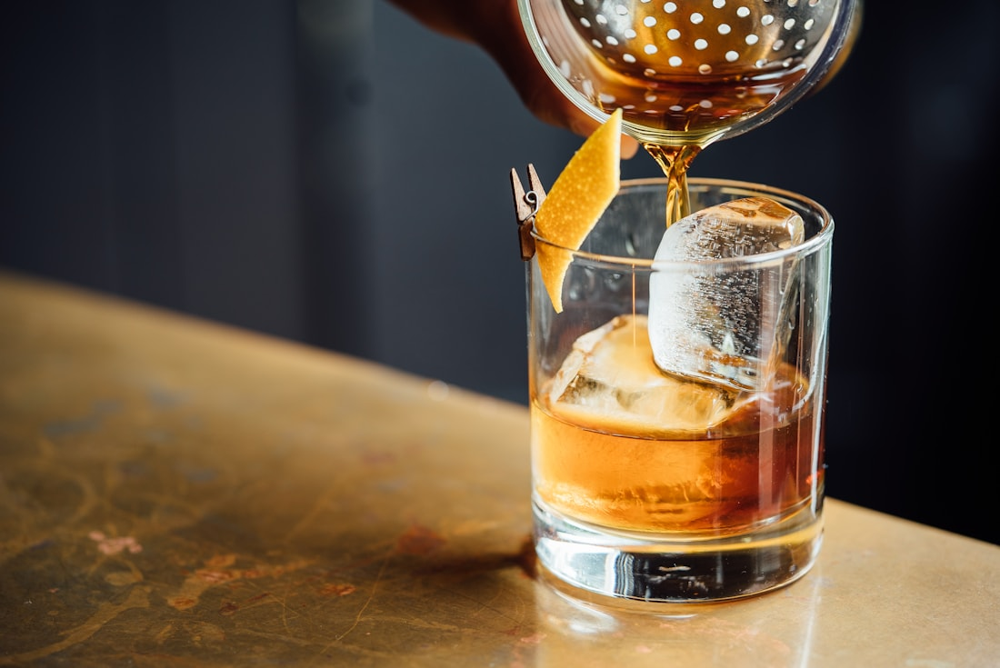

Our selection
A variety of beverages for different tastes and occasions, from familiar names to new discoveries.
✦ LOCAL ROOTS. GOOD SPIRITS.
A friendly stop. A great selection. A little Texas warmth. Welcome to Brown Bag Liquor.

FOR ALL YOUR KIND OF OCCASIONS.HELLO, NEIGHBOR.
Brown Bag Liquor is a local liquor store serving the communities of New Caney and Tomball, Texas.
We offer a wide selection of spirits, wine, beer, tequila, whiskey, vodka, ready-to-drink options and more. Whether you’re picking up an old favorite or exploring something different, we want every visit to feel easy and welcoming.
From an evening at home to a special get-together, we’re here to help you find your next great pour.
Meet your neighborhood storeA LITTLE ABOUT WHAT MATTERS
A variety of beverages for different tastes and occasions, from familiar names to new discoveries.
Two convenient places to explore: New Caney and Tomball. Same welcoming Brown Bag experience.
We’re proud to be part of the neighborhoods we serve and to welcome the people who call them home.
A friendly, convenient place to browse, ask questions, and find something you’ll enjoy responsibly.
COME ON BY
Good spirits are closer than you think. Find your neighborhood store.